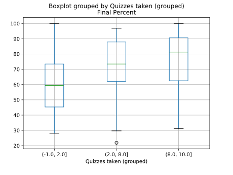
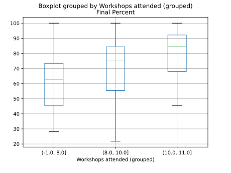
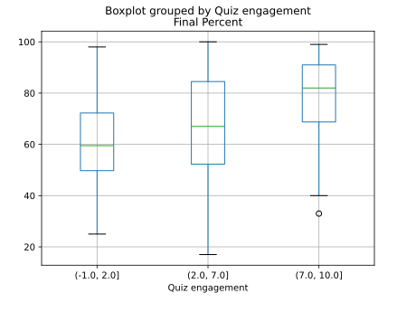
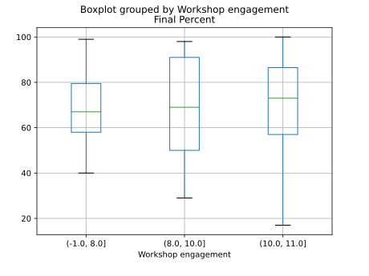

Engagement and final score
Did the students who were more engaged throughout the semester perform better on the final exam? We analyse the final score sheet and try to find the answer.
How do we measure engagement? We use quiz/workshop attendance as a proxy. The course had 11 weekly workshops and 10 weekly in-class quizzes. Workshop participation was marked with a low weight 5% of the total mark. Quiz participation was optional (if students missed a quiz, their final exam score weighed more to compensate).
We divide the cohort into three groups of roughly equal size:
- low engagement
- attended a small number of workshops/quizzes,
- medium engagement
- attended a medium number of workshops/quizzes,
- high engagement
- attended most workshops/quizzes.
We plot the final exam scores of the three cohorts side by side.
Unsurprisingly, there is a clear positive trend: more engagement correlates with higher score. I would like to think there is some causation here, but could just be that the students who are stronger and more interested tend to engage more and also tend to score more.
Results from 2024 S1
In the following graphs, the \(x\)-axis represents the quizzes/workshops attended and the \(y\)-axis represents the score on the final exam.


Results from 2023 S1
In the following graphs, the \(x\)-axis represents the quizzes/workshops attended and the \(y\)-axis represents the score on the final exam.


In 2023 S1, more than half the students attended all the workshops, so the group sizes above are unequal (roughly 30, 30, 60).